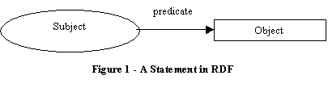
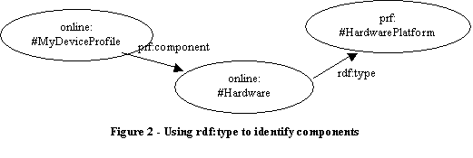
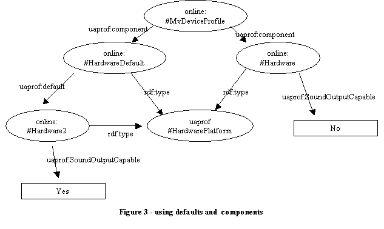
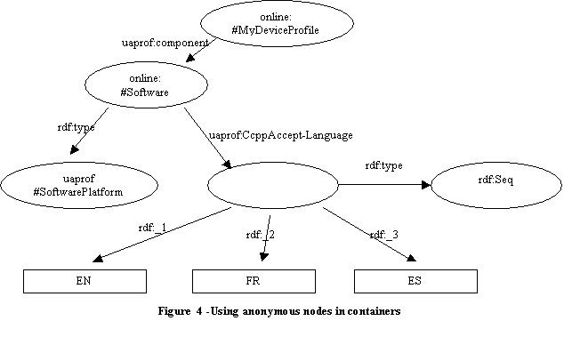

DELI: A DElivery context LIbrary for CC/PP and UAProf
Mark H. Butler
marbut@hplb.hpl.hp.com
External Technical Report HPL-2001-260
REVISED VERSION 02/08/2002
Abstract
Different web-enabled devices have different input, output, hardware, software, network and browser capabilities. In order for a web server or web-based application to provide optimized content to different clients it requires a description of the capabilities of the client known as the delivery context. Recently two new compatible standards have been created for describing delivery context: Composite Capabilities / Preferences Profile (CC/PP) created by the W3C and User Agent Profile (UAProf) created by the WAP Forum. DELI is an open-source library developed at HP Labs that allows Java servlets to resolve HTTP requests containing delivery context information from CC/PP or UAProf capable devices and query the resolved profile. It also provides support for legacy devices so that the proprietary delivery context descriptions currently used by applications can be replaced by standardised CC/PP descriptions.
Keywords
Device Independence, Composite Capabilities / Preferences Profile (CC/PP), Resource Description Framework (RDF), Wireless Access Protocol (WAP), User Agent Profile (UAProf)
Different web-enabled devices have different input, output, hardware, software, network and browser capabilities. In order for a web server or web-based application to provide optimized content to different clients it requires a description of the client capabilities. Recently two new compatible standards have been created for describing delivery context based on the Resource Description Framework (RDF)[1]: Composite Capabilities / Preferences Profile (CC/PP) [2] created by the W3C and User Agent Profile (UAProf) created by the WAP Forum[3].
One of the design aims of these standards was the efficient delivery of delivery context to the server even via low bandwidth wireless networks. This is achieved by the use of profile references and profile differences that work as follows: instead of sending an entire profile with every request a client only sends a reference to a profile, stored on a third device known as a profile repository, along with a list of overrides specific to this particular client. The process of interpreting the profile references and differences is known as profile resolution.
DELI is an open-source library developed at HP Labs that allows Java servlets to resolve HTTP requests containing CC/PP or UAProf information and query the resolved profile. This report describes how programmers can create delivery context-aware servlets using DELI. It also details some observations made during implemention and discusses their implications for CC/PP. The DELI library and accompanying test-harnesses discussed here are available open-source. To obtain a copy of the DELI source code, please refer to the DELI web-site[4].
The Resource Description Framework (RDF) is the W3C foundation for processing metadatai.e. information about information. It aims to provide interoperability between applications that exchange machine-understandable information on the Web. RDF is currently described in two documents: the RDF Model and Syntax Specification[5] and RDF Schema Specification 1.0[6].
Essentially RDF models consist of a collection of statements about resources. A resource is anything named by a URI plus an optional anchor ID e.g. in
http://www.wapforum.org/profiles/UAPROF/ccppschema-20010430#HardwarePlatform
the URI is everying before the hash and the anchor ID is everying after the hash. An RDF statement comprises of a specific resource together with a named property plus the value of that property for that resource. These three individual parts of a statement are called, respectively, the subject, the predicate, and the object. The object of a statement can be another resource or it can be a literal i.e. a simple string or other primitive datatype defined by XML. An RDF statement is shown in Figure 1.
|  |
RDF can be serialized using XML; CC/PP and UAProf profiles are normally written in this form. However viewing profiles in serialized form is deceptive as the underlying RDF model has a tree structure. In order to better understand this, it is suggested that the reader investigates the W3C RDF Validation Service[7]. For example try taking the profile in the UAProf specification (DELI_ROOT\profiles\test01.rdf in the DELI distribution) and process it using the W3C Validation service.
It is important to note there are many possible serialisations of a single RDF model. This means that parsing RDF models written in the XML serialisation requires additional processing beyond that provided by an XML parser. Fortunately there are a number of RDF frameworks now available that automatically take XML serialisations of RDF and construct an RDF model. DELI currently uses Jena[8], an RDF Framework developed at HP Labs. For more details of using Jena to process RDF see Brian McBride’s paper on Jena[9] and the HP Labs Semantic Web activity homepage[10].
A CC/PP profile is a description of device capabilities and user preferences that can be used to guide the adaptation of content presented to that device. CC/PP is described in three documents: CC/PP Structure and Vocabularies[11], CC/PP Requirements and Architecture[12] and CC/PP Terminology and Abbreviations[13]. A proposed (and largely deprecated) protocol for CC/PP is described in two documents: CC/PP exchange protocol using HTTP extension framework[14] and Content Negotiation Header in HTTP Scenarios[15]. The protocol work has been deprecated because the CC/PP Working Group was not chartered by the W3C to do protocol work. However these documents formed the basis for the UAProf protocol work to be discussed in the next section.
A CC/PP profile is broadly constructed as a two level hierarchy: a profile has a number of components and each component has a number of attributes. The attributes of a component may be included directly in a profile document, or may be specified by reference to a default profile that may be stored separately and accessed via a URL. CC/PP distinguishes between default and non-default values attributes such that non-default values always takes precedence.
Although a CC/PP profile is a two level hierarchy, it is commonly represented using an XML serialisation of an RDF model. Crucially the underlying RDF model describing a profile is more complicated than a two level hierarchy. This can be demonstrated by processing a profile using the W3C RDF validation service referenced in the previous section. Some examples of these complexities are as follows: Firstly simply giving a component a standard name (e.g. HardwarePlatform) is not sufficient to distinguish it as a particular component. In addition it must have an rdf:typeproperty that indicates it is an instance of a particular component type in a particular namespace as shown in Figure 2.
|  |
Secondly default values are represented by a component containing a second component referenced via a ccpp:Defaults property as shown in Figure 3. Note this Figure shows a profile with multiple values for the same attribute. Using the resolution rules, SoundOutputCapable will be resolved to No.
|  |

As an approved protocol does not yet exist for CC/PP, it has not
been possible to implement a CC/PP protocol in DELI. However the
DELI architecture has been designed so that it will be easy to add
such a protocol in the future. In addition DELI was designed
specifically so it can process many different CC/PP vocabularies.
This is essential as CC/PP does not propose any vocabularies for
describing device capabilities instead only providing an underlying
structure for such vocabularies.
The UAProf specification[16] is based on the CC/PP specification. Like CC/PP, a UAProf profile is a two level hierarchy composed of components and attributes. Unlike CC/PP, the UAProf specification also proposes a vocabulary – a specific set of components and attributes – to describe the next generation of WAP phones.
The specification also describes two protocols for transmitting the profile from the client to the server. Currently DELI only supports one of the UAProf protocols. This is because the other UAProf protocol, based on HTTPex and WSP, is intended to be used for client to gateway communication rather than client to server communication. DELI attempts to provide server rather than gateway support so this protocol is beyond the scope of the current implementation. In addition UAProf can also be used when documents are “pushed” from the server to the client without the client issuing a request. DELI does not support the push environment at present. Finally the UAProf specification describes a binary encoding of UAProf profiles. Binary encoding and decoding of profiles is typically performed by the gateway so this is also beyond the scope of DELI.
Currently profiles using the UAProf vocabulary consist of six components: HardwarePlatform, SoftwarePlatform, NetworkCharacteristics, BrowserUA, WapCharacteristics and PushCharacteristics. These components contain attributes. In DELI each attribute has a distinct name and has an associated collection type, attribute type and resolution rule. In UAProf there are three collection types:
· Simplecontains a single value e.g. ColorCapable in HardwarePlatform. Note the UAProf specification does not give a name to single value attributes so the term Simple has been adopted from the CC/PP specification.
In addition attributes can have one of four attribute types:
· String e.g. BrowserName in BrowserUA.
Finally attributes are associated with a resolution rule:
In DELI the UAProf vocabulary is described using a vocabulary definition file such as uaprof_vocab_30may2001.xmlfound in the config/vocab directory. This describes the attribute name, component, collectionType, attributeType and resolution rule of each component. The vocabulary description file has the following format:
<?xml version="1.0"?>
<vocabspec>
<attribute>
<name>CcppAccept</name>
<component>SoftwarePlatform</component>
<collectionType>Bag</collectionType>
<attributeType>Literal</attributeType>
<resolution>Append</resolution>
</attribute>
…
</vocabspec>
Alternatively DELI can read UAProf schema files such as ccppschema-20010330.rdfs. found in the config/vocab directory. Note these files are derived from schemas obtained from the WAP Forum website but have been corrected for a number of RDF errors[17]. Currently there is a problem with the approach used to describe UAProf vocabularies using RDF schema. It is difficult to parse the schemas in RDF or XML as the schemas define attributeTypeand resolution in a comments field. DELI can parse the comments field to retrieve this information but hopefully a better mechanism for this will be proposed in later versions of UAProf.
As mentioned previously DELI only implements one of the UAProf protocols: transport via W-HTTP (Wireless profiled HTTP). An example W-HTTP request using this protocol is shown below:
GET /ccpp/html/ HTTP/1.1
Host: localhost
x-wap-profile:"http://localhost:8080/ccpp/profiles/test09defaults.rdf",
"1-Rb0sq/nuUFQU75vAjKyiHw=="
x-wap-profile-diff:1;<?xml version="1.0"?>
<rdf:RDF xmlns="http://www.w3.org/1999/02/22-rdf-syntax-ns#"
xmlns:rdf="http://www.w3.org/1999/02/22-rdf-syntax-ns#"
xmlns:prf="http://www.wapforum.org/profiles/UAPROF/ccppschema-20010430#">
<rdf:Description rdf:ID="MyDeviceProfile">
<prf:component>
<rdf:Description rdf:ID="HardwarePlatform">
<rdf:type
rdf:resource="http://www.wapforum.org/profiles/UAPROF/ccppschema-
20010426#HardwarePlatform"/>
<prf:BitsPerPixel>16</prf:BitsPerPixel>
</rdf:Description>
</prf:component>
</rdf:Description>
</rdf:RDF>
The first two lines of this request are standard HTTP and describe the resource that is being requested by the client, http://localhost/ccpp/html, and the method being used to make the request, GET, and the protocol being used HTTP/1.1. The remaining lines of the request describe the device delivery context. This is specified using a profile reference and a profile-diff. The profile is referenced via the x-wap-profile line and has the URI
http://localhost:8080/ccpp/profiles/test09defaults.rdf.
After the profile reference, there is a value 1-Rb0sq/nuUFQU75vAjKyiHw==known as a profile-diff digest.The first part of the profile-diff-digest, 1-, is the profile-diff sequence number. This is used to indicate the order of the profile-diffs and to indicate which profile-diff the profile-diff digest refers to. The remainder of the profile-diff digest is generated by applying the MD5 message digest algorithm[18] and Base64 algorithm[19] to the corresponding profile-diff. The MD5 algorithm takes as input a message of arbitary length and produces as output a 128-bit “fingerprint” or “message-digest” of the input. The Base64 algorithm takes as input arbitary binary data and produces as output printable encoding data.
After the profile-diff digest, the next line contains the x-wap-profile-diff. This request header field also has a profile-diff sequence number which indicates the processing order and that this profile-diff corresponds to the previous profile-diff-digest. The profile-diff itself consists of the XML fragment which spans the remainder of the request. Multi-line request header fields are permitted by the HTTP/1.1 specification[20] as long as each subsequent line starts with either a tab character or a whitespace. Note not all servlet engines, for example early versions of Tomcat, fully support the HTTP/1.1 specification so may not allow multi-line request header fields.
In addition to x-wap-profile and x-wap-profile-diff W-HTTP protocol adds a third extension header primarily used in responses. This header, x-wap-profile-warning indicates whether the server has used the UAProf information when generating the response. This can take five possible values: not applied, content selection applied, content generation applied, transformation applied and not supported.
When the server receives a HTTP request with UAProf request headers, it has to perform profile resolution i.e. retrieve the referenced profile(s) and any further profiles referenced via default blocks. It then has to merge these profiles and the profile-diffs while applying the UAProf resolution rules.
DELI performs profile resolution by processing all profiles and profile-diffs in the following order: firstly it processes all referenced profiles in the order they are present in the x-wap-profile request header. If a referenced profile references an external default profile then that is included where it is referenced. It then processes all the profile-diffs. This profile processing operation involves building an RDF model for each profile or profile-diff and then extracting a list of attributes from the model. Each attribute is associated with an attribute name, an attribute type, a collection type, a resolution rule and either one or more default values or one or more non-default values. These attributes are then appended together in the order indicated.
After DELI has produced the vector of profile attributes, profile merging is performed which involves taking each attribute in order from the list and placing it at a specific position in an array determined by the attribute name. If a collision occurs i.e. an attribute is already present in the array then the two attribute values are merged using the following rules:
Note that this algorithm does not perform merging in the RDF domain, rather it performs merging after the attributes have been retrieved from the RDF domain.
Neither the UAProf nor the CC/PP specifications consider how the profile should select, generate or transform content based on the resolved profile. An extensive discussion of this topic is beyond the scope of this report so the reader is instead referred to previous technical reports by the author discussing content transformation by XML / XSLT publishing frameworks[21], content generation using constraint optimisation and content negotiation[22].
DELI also currently provides no support for content selection, generation or transformation. Instead it is proposed that DELI should be integrated with existing applications that transform content for clients based on the user agent string. From version 2.0.2, Apache Cocoon[23] provides support for CC/PP using DELI. With DELI support enabled it is currently possible for XSLT stylesheets to query profile attributes. For more information on this, download the latest version of Cocoon from the Cocoon CVS and look at the static samples to see the DELI documentation. Future work will investigate other ways of using CC/PP information in Cocoon. Other frameworks such as Apache Jetspeed[24] or Apache Struts[25] could be adapted in a similar way. Future work will investigate how DELI can be used to support device independence.
In order to install DELI and run the test servlets, you will need a Java installation along with a Java Servlet engine that can accept WAR files such as Apache Tomcat 4[26] or Mortbay Jetty[27]. In addition if you wish to do any development or customising of DELI you will need Apache ANT[28]. By default DELI supports the Nokia WAP Toolkit 2.1 (and higher) and Microsoft Internet Explorer as legacy devices so it may be helpful to have access to one of these.
Installation of the DELI test servlet is easy. Once you have confirmed your Java Servlet engine is working correctly, unzip the DELI distribution file to the directory DELI_ROOT. Copy the file DELI_ROOT\warfiles\ccpp.warinto the webapps directory of the Servlet engine. For example if you installed Tomcat in c:\apps32\tomcat then you need to copy ccpp.war to c:\apps32\tomcat\webapps\ccpp.war. Start the servlet engine and use Internet Explorer to check the DELI installation is working. If you type the following address into MSIE
http://localhost:8080/ccpp/html/
then the browser should display the contents of the profile profiles\msie.rdf in the DELI distribution. In addition by default DELI will output debugging information to the Servlet engine console. Alternatively if you start the Nokia WAP toolkit, select the WAP 2000 simulator. This simulator is UAProf capable but you need to set the refererence profile in order to simulate UAProf. To do this select “device settings” from the settings menu. Then select the headers in tab in the device settings dialog box. In the text box “User Agent Profile” type the name of an available user profile e.g.
http://localhost:8080/ccpp/profiles/nokia.rdf
This configures the Nokia toolkit to simulate UAProf requests use the profile as a reference profile. Then request the following web page in the Nokia browser:
http://localhost:8080/ccpp/wml/
then the browser should display the contents of the profile profiles\nokia.rdf in the DELI distribution.
Alternatively you can try sending some real UAProf requests to the server. To do this, you need to add various files to your classpath. Open a Dos/Unix shell and cd to DELI_ROOT. Then set the environment variables DELI_HOME and CATALINA_HOME to point to the DELI root directory and tomcat root directory respectively. For example, in Windows you would execute ‘set DELI_HOME=c:\deli’ and ‘set CATALINA_HOME=c:\jakarta-tomcat-4.0.4 ‘. Then run winsetpath.bat at the command line (note winsetpath.bat is Microsoft specific – for UNIX machines you may have to adapt this file). Then type
java com.hp.hpl.deliTest.TestCCPPClient normal http://localhost:8080/ccpp/profiles/testprofiles/test09defaults.rdf profiles\testprofiles\test09.rdf output.html
which sends a HTTP request to the server with a profile reference http://localhost:8080/ccpp/profiles/testprofiles/test09defaults.rdf and uses the file profiles\testprofiles\test09.rdf as a profile-diff. When it receives a response from the server it stores it in output.html. To view the server response open output.html in a web browser. For more details of running and testing DELI, see the Section 9.
It is easy to configure DELI to recognise legacy devices via user-agent strings. User-agent strings are used by web clients to identify themselves when they send requests to web servers. This is done primarily for statistical purposes and the tracing of protocol violations but does support the automated recognition of user agents. For example early Netscape products generate user-agent strings that look like this:
User-agent: Mozilla/4.04 (X11; I; SunOS 5.4 sun4m)
Where the user agent string has the following syntax:
Browser / version( platform ; security-level; OS-or-CPU description)
The legacy device configuration file maps user-agent strings on to profile references on a profile repository. In the test applications this is done by the DELI_ROOT\config\legacyDevice.xml file, although it is possible to select a different file via the DELI configuration. The legacy device configuration file has the following format:
<?xml version="1.0"?>
<devices>
<legacyDevice>
<useragentstring>MSIE</useragentstring>
<profileref>http://www.profiles.org/legacyProfiles/msie.rdf</profileref>
</legacyDevice>
<legacyDevice>
<useragentstring>mozilla</useragentstring>
<profileref>resources/deli/legacyProfiles/mozSample.rdf</profileref>
</legacyDevice>
</devices>
Where useragentstring is a device unique string found in the user-agent string of the device and profileref is either a local file URL for the appropriate profile on a profile repository. Note typically part of the user-agent string is used rather than the entire string. This is done to avoid problems due to cloaking and browser customisation.
Cloaking is when a device or browser (e.g. Microsoft Internet Explorer) claims to be another browser (e.g. Mozilla) in order to ensure web servers will send it the correct content. Browser customisation is when the device manufacturer or the owner can change the user-agent string to add the company name. This means identical browsers may not have the same user agent string. In order to avoid confusion caused by cloaking and customisation it is necessary to think carefully about how much of the user-agent string to use and the order of legacy devices in the legacy device file. For example when creating a legacy device file it is a good idea to have an Internet Explorer legacy device before a Netscape legacy device as they both contain the user agent string Mozilla, but Internet Explorer will also contain the user agent string MSIE so it is possible to identify IE first.
If you change any of the files e.g. configuration files or need to alter any of the source files it is necessary to rebuild the DELI web archive (WAR) file. In order to do this, just change to the DELI_ROOT directory and type ant at the command line. This takes the file build.xml which builds the WAR file. Then to redeploy DELI you need to stop your Servlet engine, delete the ccpp directory in the webapps directory then copy the new ccpp.war file to the webapps directory. Now restart the Servlet engine.
DELI uses the concept of a workspace configured to interpret profiles that use certain vocabularies, a set of certain resolution rules and requests that use a certain variant of HTTP. In addition the workspace contains a cache of referenced profiles, information about the vocabularies in use and the legacy device database. A workspace is configured using a configuration file such as DELI_ROOT\config\deliConfig.xml. The file is written in XML in the following format:
<?xml version="1.0"?>
<deli>
<legacyDeviceFile>config/legacyDevice.xml</legacyDeviceFile>
<debug>false</debug>
<printDefaults>false</printDefaults>
<printProfileBeforeMerge>true</printProfileBeforeMerge>
<processUndefinedAttributes>true</processUndefinedAttributes>
<useCapabilityClasses>true</useCapabilityClasses>
<capabilityClassFile>config/capClass.xml</capabilityClassFile>
<namespaceConfigFile>config/namespaceConfig.xml</namespaceConfigFile>
</deli>
This file can contain caching, debugging, legacy device, protocol and vocabulary configuration directives as detailed in the subsequent sections.
The caching options control the way the workspace caches referenced profiles. DELI caches referenced profiles but not profile-diffs. This is because referenced profiles are associated with a unique identifier (the referenced profile URL) but profile-diffs are not. DELI can either cache profiles indefinitely or update stale profiles after a set interval. It is also possible to configure the maximum size of the profile cache.
|
Element Name |
Default Value |
Description |
|
MaxCachedProfileLifetime |
24 hours |
The maximum lifetime of a cached profile in hours. |
|
MaxCacheSize |
100 |
The maximum number of profiles in the profile cache. |
|
RefreshStaleProfiles |
false |
Do we refresh cached profiles after the maximum lifetime has expired? |
The debugging options are used to control the information that DELI prints to the Servlet engine console.
|
Element Name |
Default Value |
Description |
|
Debug |
true |
Is the automatic debug log information turned on? |
|
printDefaults |
true |
Print both default and override values of attributes for debugging purposes? |
|
printProfileBeforeMerge |
false |
Print the profile before merging for debugging purposes? |
As already mentioned DELI can support legacy devices by recognising the user-agent string supplied by a client and mapping it on to a profile. In order to use this facility it is necessary to supply an XML file that contains information about legacy device user-agent strings and the corresponding profile URLs.
|
Element Name |
Default Value |
Description |
|
supportLegacyDevices |
true |
Is the legacy device database turned on? |
|
legacyDeviceFile |
config/legacyDevice.xml |
The file containing the legacy device database. |
DELI has a number of protocol options. Firstly it is possible to switch on whitespace normalisation in profile-diffs prior to calculating the profile-diff-digest in order to accommodate a modification to the UAProf protocol that has been proposed by IBM. When a server receives the request, it recalculates the profile-diff-digest. If additional whitespaces have been added to the request header by a proxy then there is a danger the two profile-diff digests will differ so the profile-diff will be rejected. Therefore IBM have proposed the following normalisation procedure prior to profile-diff digest calculation: all leading and trailing white spaces are eliminated (white space as defined in RFC 2616 section 2.2). Then all non-trailing or non-leading linear white space contained in the profile description, including line folding of multiple HTTP header lines, is replaced with one single space (SP) character. This implies that property values, represented as XML attributes or XML element character data, MUST be adhering to white space compression as mandated in RFC 2616 section 2.2.
Secondly there are two options that determine the type of objects returned by three Workspace factory methods. ccppReaderType is used to select the object returned by the processProfileFactory() method and protocol is used to select the object returned by the processHttpFactory() method and the profileAttributeFactory() method. These options are provided so it will be easy to integrate other RDF processors and other protocols in the future. At present the default values are the only available options.
|
Element Name |
Default Value |
Description |
|
normaliseWhitespaceInProfileDiff |
true |
Is whitespace normalisation of the profile-diff prior to calculating the profile-diff-digest turned on? |
|
ccppReaderType |
jena |
The CC/PP reader to use for processing profiles. |
|
protocol |
UAProf |
The protocol used for profile transmission. |
DELI has a number of vocabulary options. Firstly it is possible to configure the vocabularies using an XML file (by default namespaceConfig.xml). This file contains information about specific CC/PP vocabulary configuration i.e. references to vocabulary namespace URIs and their associated XML or RDF schema file containing the attribute names, the components they belong to, the collection type, the attribute type and the resolution rule used by a specific vocabulary.
Secondly it is possible to specify the URI to be used for the RDF namespace and the CC/PP or UAProf namespace. This is important because as the specifications are revised they adopt new namespaces. Thirdly it is possible to set the string used to represent components in the vocabulary.
|
Element Name |
Default Value |
Description |
|
namespaceConfigFile |
config/namespaceConfig.xml |
The file containing the mapping of vocabulary namespace URIs to XML/RDF schema vocabulary specifications. |
|
RdfUri |
http://www.w3.org/1999/02/22-rdf-syntax-ns# |
The namespace used for RDF constructs. |
|
ComponentProperty |
component |
The name for components. |
The namespaceConfigFile referenced by deliConfig.xml above takes the following format:
<?xml version="1.0"?>
<namespaceConfig>
<namespaceDeclaration>
<namespace>
<uri>http://www.wapforum.org/UAPROF/ccppschema-20000405#</uri>
<vocabularyFile>config/vocab/uaprof_vocab_05apr2000.xml</vocabularyFile>
</namespace>
<namespace>
<uri>http://www.wapforum.org/UAPROF/ccppschema-20010330#</uri>
<aliasUri>http://www.wapforum.org/UAPROF/ccppschema-19991014#</aliasUri>
<aliasUri>http://www.wapforum.org/UAPROF/ccppschema-20010430#</aliasUri>
<schemaVocabularyFile>config/vocab/ccppschema-20010330.rdfs</schemaVocabularyFile>
</namespace>
</namespaceDeclaration>
</namespaceConfig>
Each namespace defines a specific vocabulary definition and associates it with a URI specified by uri. Due to the misuse of namespaces, a regular problem is the use of multiple namespace URIs to refer to the same vocabulary. To overcome this an aliasUri element has been introduced for specifying alternative URIs that should also map to this vocabulary definition. Either a vocabularyFile (The file containing the vocabulary specification in XML) or a schemaVocabularyFile (The file containing the vocabulary specification as an UAProf RDF Schema.) must also be specified.
In order to understand how to construct servlets with DELI, the reader is encouraged to examine the example servlets in the DELI distribution:
DELI_ROOT\src\com\hp\hpl\deliTest\TestCCPPServlet.java
DELI_ROOT\src\com\hp\hpl\deliTest\TestCCPPServletWML.java
In order to create a Java servlet that uses the DELI library it is necessary to include the DELI package, e.g.
import com.hp.hpl.deli.*;
and to include a servletContext as a class data member e.g.
ServletContext servletContext;
Then when the servlet is initialized query the servletContext to determine the path to the servlet and use this information to create the workspace e.g.
public void init(ServletConfig config) throws ServletException
{
super.init(config);
try
{
servletContext = config.getServletContext();
Workspace.getInstance().configure(servletContext,"config/deliConfig.xml");
} catch (Exception e) {
try
{
Workspace.getInstance().configure((ServletContext) null, "config/deliConfig.xml");
} catch (Exception f) {
System.out.println(f.toString());
}
}
}
Once the workspace is initialised (note that the Workspace class is a Singleton, and should not be directly instantiated, but rather accessed by use of the static method getInstance()), profile resolution is achieved by creating a new profile using a HttpServletRequest e.g.
public void doGet(HttpServletRequest req, HttpServletResponse res) throws ServletException, IOException
{
Profile myProfile = new Profile(req);
Then the addWarningHeader() can be used to add an x-wap-profile-warning to the response header e.g.
res = UAProfCreateHttpResponse.addWarningHeader(res, UAProfCreateHttpResponse.CONTENT_GENERATION_APPLIED);
}
The profile can be manipulated by using the standard Vector methods which will retrieve profile attributes e.g.
for (int i = 0; i < myProfile.size(); i++)
{
ProfileAttribute p = (ProfileAttribute)myProfile.get(i);
out.println("<TD>"+p.get()+"</TD>");
}
Or by directly retrieving a profile attribute e.g.
System.out.println(myProfile.getAttribute("BrowserName").toString());
In addition it is possible to query profile attributes using the get(), getAttribute(), getCollectionType(), getComponent(), getDefaultValue(), getResolution(), getType() and getValue() methods. Full details of the DELI API are contained in the Javadoc in the DELI_ROOT\javadoc\user directory which describes the classes and methods exported by the DELI package.
As well as providing an implementation of UAProf, DELI has been designed for extensibility so that it can be used to experiment with different possible implementations of UAProf and CC/PP. This is achieved by the use of two abstract classes that allow DELI to be extended so it can cope with new vocabularies or protocols. This section will describe these abstract classes but developers are also referred to the Javadoc at DELI_ROOT\javadoc\developer directory that details all the internal classes and methods used by DELI.
The ProcessProfile abstract class defines a class with three methods that convert a profile from the XML serialised form of RDF to a vector of profile attributes. This class has been provided to support experimentation with different RDF processors. Currently the Jena framework is used to process the profile, but it may be useful to implement profile processing using other RDF parsers to test efficiency. Alternatively this class could be used to test the relative efficiency of profiles serialized directly in XML rather than profiles serialized in XML via RDF.
An outline for an implementaiton of this abstract class is shown below. The methods accept a String for a profile URL, a file containing a profile URL, or a Vector containing profiles or profile-diffs as Strings. All the methods return a vector of profile attributes prior to resolution. For an example implementation, see
DELI_ROOT\src\com\hp\hpl\deli\JenaProcessProfile.java
If you create a new implementation of ProcessProfile you will also need to add some code to the ProcessProfileFactory method in Workspace. This method uses the ccppReaderType setting to determine which type of ProcessProfile is returned.
package com.hp.hpl.deli;
class ProcessorTypeProcessProfile extends ProcessProfile
{
protected Vector process(String url)
{
…
}
protected Vector process(FileReader file)
{
…
}
protected Vector process(Vector profileVector)
{
…
}
}
The ProfileAttribute class has a single abstract method set(ProfileAttribute) that performs resolution when an attribute has two values. Resolution rules are vocabulary dependent so this mechanism has been used so that it is easy to add vocabulary specific resolution. An outline for an implementation of this abstract class is shown below. For an example implementation, see
DELI_ROOT\src\com\hp\hpl\deli\UAProfProfileAttribute.java
If you create a new implementation of ProfileAttribute you will also need to add some code to the ProfileAttributeFactory method in Workspace. This method uses the protocol setting to determine which type of ProfileAttribute is returned.
package com.hp.hpl.deli;
class VocabularyProfileAttribute extends ProfileAttribute
{
VocabularyProfileAttribute()
{
super();
}
protected void set(ProfileAttribute a)
{
…
}
}
So in conclusion this report has described DELI, an open-source server implementation of profile resolution for CC/PP. DELI is currently alpha grade software provided to demonstrate how CC/PP may be implemented. It is designed to be easily extensible and configurable so it may be used as a test-bed for prototyping future developments with these specifications. DELI will be further developed to ensure compatibility with these standards.
[1] Resource Description Framework, http://www.w3.org/RDF/
[2] Composite Capabilities / Preferences Profile, http://www.w3.org/Mobile/CCPP/
[3] Wireless Application Forum, http://www.wapforum.org/
[4] DELI web-site, http://www-uk.hpl.hp.com/people/marbut/deli/
[5] RDF Model and Syntax Specification, http://www.w3.org/TR/1999/REC-rdf-syntax-19990222/
[6] RDF Schema Specification 1.0, http://www.w3.org/TR/2000/CR-rdf-schema-20000327/
[7] W3C RDF Validation service, http://www.w3.org/RDF/Validator/
[8] Jena RDF Framework, http://www.hpl.hp.com/semweb/jena-top.html
[9] Jena: Implementing the RDF Model and syntax specification, http://www-uk.hpl.hp.com/people/bwm/papers/20001221-paper/
[10] HP Labs Semantic Web Activity, http://www.hpl.hp.com/semweb/
[11] CC/PP: Structure and Vocabularies, http://www.w3.org/TR/CCPP-struct-vocab/
[12] CC/PP: Requirements and Architecture, http://www.w3.org/TR/2000/WD-CCPP-ra-20000721/
[13] CC/PP: Terminology and Abbreviations, http://www.w3.org/TR/2000/WD-CCPP-ta-20000721/
[14] CC/PP exchange protocol using HTTP Extension Framework, http://www.w3.org/TR/NOTE-CCPPexchange
[15] Content Negotiation Header in HTTP Scenarios, http://search.ietf.org/internet-drafts/drafts-hjelm-http-cnhttp-scenarios-00.txt
[16] WAG UAProf proposed version 30 May 2001, WAP-248-UAPROF-20010530-p, http://www1.wapforum.org/tech/terms.asp?doc=WAP-248-UAProf-20010530-p.pdf
[17] UAProf Schema, http://www.wapforum.org/profiles/UAPROF/ccppschema-20010330
[18] RFC1321: The MD5 Message-Digest Algorithm, http://www.faqs.org/rfcs/rfc1321.html
[19] Section 13.6 and section 14.4 in RFC2045: Multipurpose Internet Mail Extensions, http://www.faqs.org/rfcs/rfc2045.html
[20] RFC 2616: Hypertext Transfer Protocol 1.1 http://www.w3.org/Protocols/rfc2616/rfc2616.html
[21] HPL-2001-83: Current Techniques for Device Independence, http://www.hpl.hp.com/techreports/2001/HPL-2001-83.html
[22] HPL-2001-190: Implementing Content Negotiation with CC/PP and UAProf,
[23] Apache Cocoon, http://xml.apache.org/cocoon
[24] Apache Jetspeed, http://jakarta.apache.org/jetspeed/site/index.html
[25] Apache Struts, http://jakarta.apache.org/struts/index.html
[26] Apache Tomcat, http://jakarta.apache.org/tomcat/index.html
[27] Mortbay Jetty, http://jetty.mortbay.com
[28] Apache ANT, http://jakarta.apache.org/ant/index.html